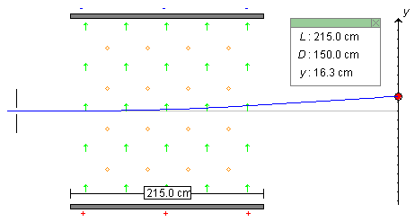

Instructions
This page is designed to get you started using the applet. The applet should be open. The step-by-step instructions on this page are to be done in the applet. You may need to toggle back and forth between instructions and applet if your screen space is limited.
It is assumed that you are familiar with the functionality of the applet as explained in Help.
The goal is to arrange all applet settings so that they are as shown in Figure 1 below.

Figure 1
Click the Reset button  .
.
Click on the y-axis (observation screen) and drag it until the width L of the capacitor plates is equal to 215.0 cm. The value of L is displayed in the Data box. Verify this value by measuring it with the Ruler. For operation of the Ruler, see Number 7 in Help.
Note that the horizontal separation D between the observation screen and the right edge of the capacitor plates (right edge of the field region) has a value equal to 150.0 cm that is fixed by the applet.
Set the initial speed, electric and magnetic fields, mass and charge of the particle to the values indicated on the sliders in Figure 1 above.

If you are an instructor, you may want to hide the settings of v, m, and q from view in order to simulate a realistic laboratory situation. Do this by clicking the Hide Values button . The remaining controls will be sufficient to allow determination of the speed and of the ratio q/m. See Lesson for details.
It will not be possible to retrieve the values of v, m, and q. Thus, make sure you note them down somewhere before clicking Hide Values. This is not a toggle button. Resetting the applet will restore the functionality of all sliders, but will not yield the former slider settings. Neither will the Replay button.
After clicking Hide Values, click Replay and observe what happens.
When the settings are as displayed in Figure 1, click Play
 .
.
Display the particle's path by selecting the Trace toggle
button  .
.
The particle should be moving along a curved blue path like that shown in Figure 2 below, reaching a vertical deflection y = 16.3 cm at the observation screen. This value is displayed in the Data box. You should also be able to measure y approximately with the ruler.

Figure 2
Reset the applet, and make the following changes and observations.